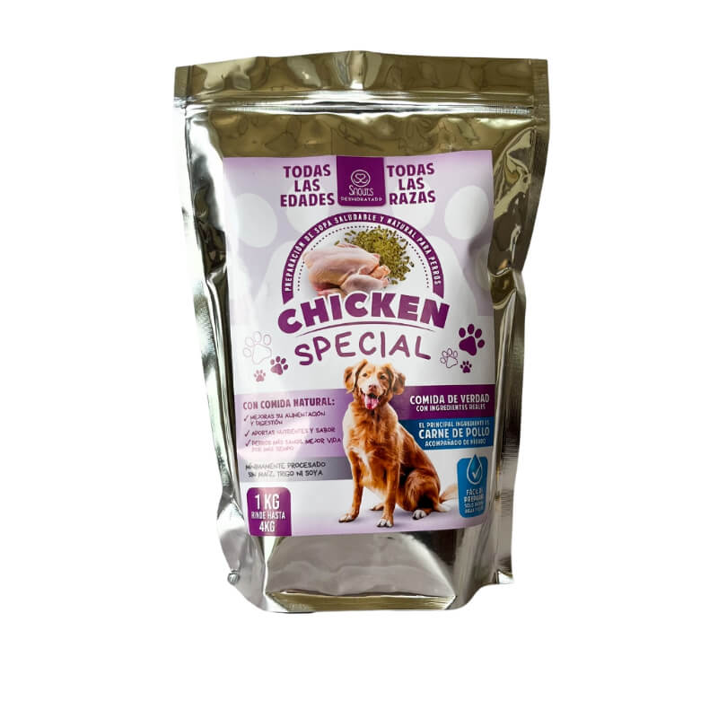
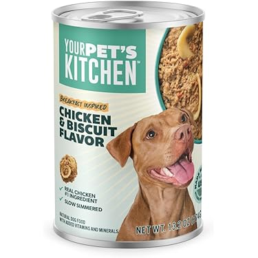
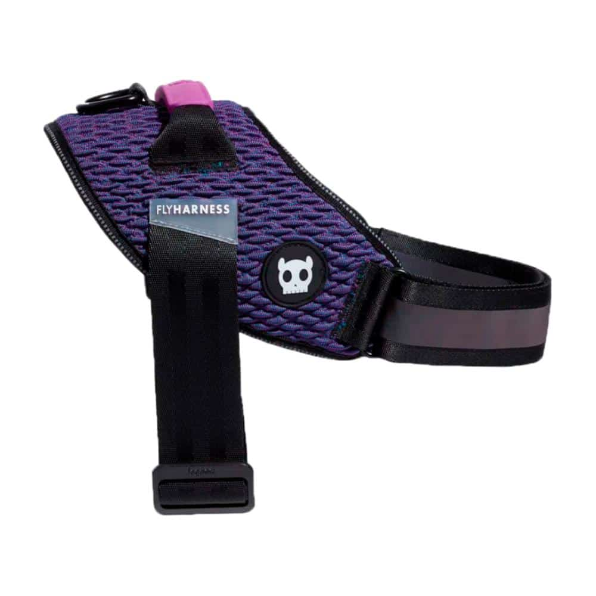
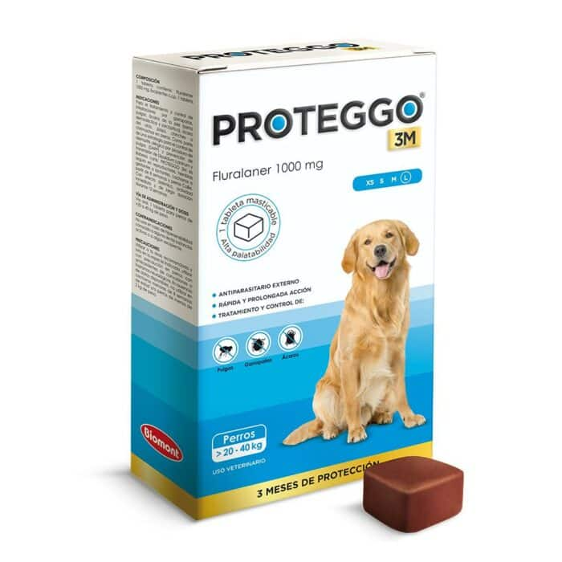
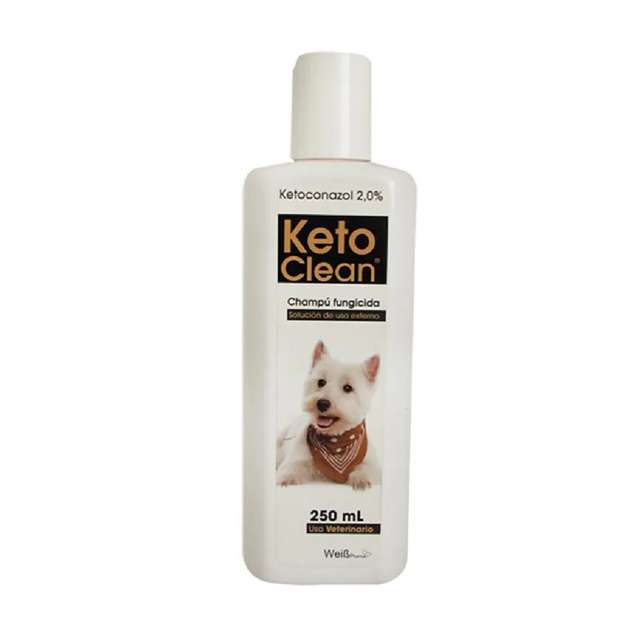
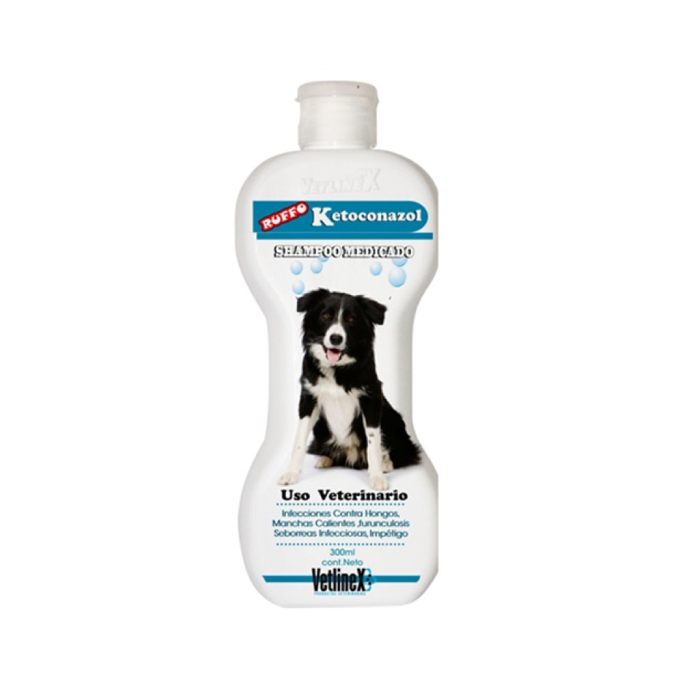
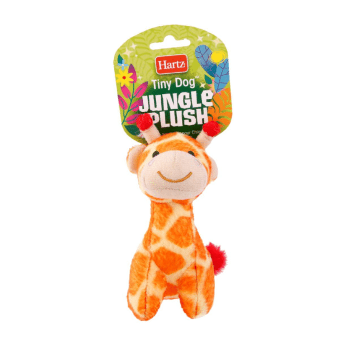

Bienestar veterinario con calidez humana
Atencion integral
Consulta, control y seguimiento en un solo lugar.
Equipo preparado
Profesionales enfocados en prevencion y tratamiento.
Ambiente cercano
Espacios pensados para reducir el estres de cada visita.
Cuidamos cada etapa de la vida de tu mascota con atencion clara, moderna y confiable.
En Huellitas Vet combinamos consultas, vacunacion, cirugias y seguimiento preventivo para que perros y gatos reciban un cuidado completo en un entorno seguro.


Servicios principales
Soluciones veterinarias claras para el cuidado diario y especializado.
Trabajamos con procesos ordenados para ofrecer diagnostico, tratamiento y prevencion con una experiencia comoda para cada familia.
Consulta general
Evaluacion clinica completa para detectar necesidades de salud y orientar el siguiente paso.

Vacunacion
Esquemas preventivos segun edad, estilo de vida y antecedentes de cada mascota.

Cirugias
Procedimientos con seguimiento responsable antes, durante y despues de la intervencion.

Grooming
Bano, higiene y cuidado estetico para reforzar confort, limpieza y bienestar.
Productos recomendados
Una seleccion pensada para nutricion, higiene, paseo y entretenimiento.
Complementamos la atencion veterinaria con productos utiles para fortalecer el cuidado diario, la comodidad y la rutina saludable de cada mascota.

Alimento premium
Nutricion balanceada para apoyar energia, digestion y vitalidad.

Formula de mantenimiento
Opcion ideal para rutinas estables con enfoque en bienestar diario.

Nutricion completa
Apoyo alimenticio para acompanar distintas etapas de crecimiento.

Arnes de paseo
Comodidad y mejor control para caminatas seguras y tranquilas.

Kit de higiene
Elementos practicos para mantener limpieza y cuidado cotidiano.

Cuidado dermatologico
Apoyo para rutinas de higiene y bienestar de piel y pelaje.

Shampoo medicado
Alternativa especializada para reforzar limpieza y cuidado externo.

Juguete interactivo
Estimulo y entretenimiento para apoyar actividad y bienestar emocional.
Reserva tu visita